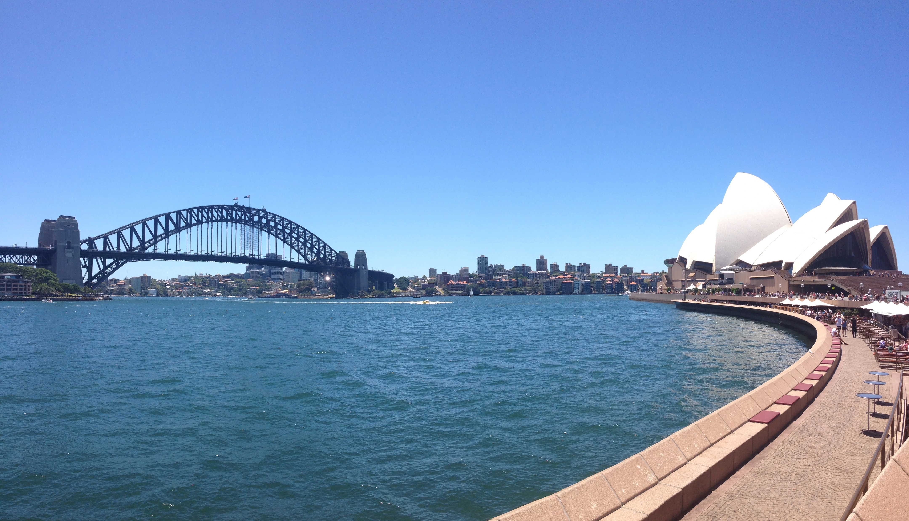

2012 was the year I finally put my feet out of Europe for the first time. My initial choice was to go to Canada, spend sometime finding casual jobs there and save some money to travel the country but I give up the idea and agreed with my travel buddy Nico that wanted to go down under and since our journey started in December, I thought that moving towards the summer definitely seemed more appealing that a freezing Canadian winter.
So I took my time to slowly spell the word Australia for the first time and once everything was set, we booked a flight to Brisbane where we spend some days and went for a excursion up north to Fraser Island (which apparently nowadays has restored its aboriginal name K'gari) that lasted a bit less than a week if I remember well, on a roaring 4x4 that took us from the inside part of the island, to some of the endless, magnificent shores that the island has to offer, where we experience our first encounter with some of the Australian wild life including Dingoes and other sort of animal. Back from the trip, after a brief visit to my friend Ryan in Labrador, we moved south and spent some time (Christmas time) in the shining city of Surfers Paradise where skyscrapers recently have grown very fast, increasing the Gold Coast reputation of a urban summer party place. I believe it is during one of those days that we did a little bit of further planning and decided to rent our beloved Wicked van that took us all the way down for the rest of the trip to the final destination of Melbourne, where positively impressed by the city, we decided to give it a chance and spend some months there in order to enjoy a bit of city life and try to find work in order to save up for the rest of our trip. On the way to Melbourne, Byron Bay was one of the first next stop because of the upcoming new year eve celebrations.
Byron is a so called hippy town, where the vibe is generally quite chilled and where lots of people enjoy surfing and playing music in the street.
I guess my personal opinion differs a bit but maybe we were only unlucky and got there in the wrong time of the year and found no way of booking a bed anywhere, since everything in town was already fully book and the few accommodation left were way too expensive for our small travel budget.
Therefore despite all the bans and restrictions we saw on road signs that forbade sleeping in camper vans (why else would you rent a camper van if you can't sleep inside?), we tried our luck and punctually got fined the first night we tried it.
We made no big deal out of it and decided to keep going south where hopefully we could find a bit less police and a bit more of nature to enjoy and after having been through many places that I can't recall and became nameless within the years (Port Macquarie and Newcastle are the only name I can bring back),
we reached the beautiful mountain side of Katoomba, definitely one my favourite places on earth, where the nature looks wild and relentless and where driving becomes a bit more challenging but intriguing, all the way up until the Three beautiful Sisters, where we could finally take our sweaty shirts off,
chill and have a mystical look down to the canyons.

Once we reached Sydney we stopped there for a couple of weeks. The city did not impress me much: it just looks like another expensive city full of office and skyscrapers and because of the usual issues with parking and driving through the city (actually here we were fined for the second time), we decided to spend the 2nd week there in the area of Coogee Beach. The highlight of the city is probably the Sydney Opera House, to me the most representative monument of the whole country and probably the most visited too. The art center was designed by the danish architect Jørn Utzon in 1957 and inaugurated in 1973 despite of the high costs and issues that has faced during the construction phase and became a UNESCO heritage site in 2007. Being located on the seaside gives to the building a special flair that I personally could find only in the Hamburgische Staatsoper in Hamburg. Once Sydney became a memory all the rest of the journey down to Melbourne went pretty smooth and the only think that struck me was the amount of fires we had to drive through. Luckily most of them were already extinguished so we did not have to worry about our safety too much but what was left was a gloomy, smoking countryside where nothing was left, like a sort of a forsaken battlefield. Fires are one of the main issues nowadays Australia has to deal with on a regular base, because of his position on the Equator and under the Ozone depletion, because of global warming and God only knows because of what else. This hysteric australian landscape brought back to my mind one of the most violent and meaningless dreamlike movie I have seen lately called Waking Fright by Ted Kotcheff. The sound of the shooting still resonates in my mind with the taste of aged, warm spirits and a sticky, boiling bar where people are looking at each other waiting for the first one to start the shooting.
Our journey was coming to the end and we were ready to start our new life in Melbourne but just before giving the Wicked van back to the rental place, we decided to put a cherry on top of the cake and have one last drive around the famous Great Ocean Road. This scenic road is a road that goes from Torquay all the way south west for about 240km, letting the driver experience how driving on the Pacific oceans feels like. Generally driving in Australia gives a great pleasure because streets are wide, there are not many cars and the surroundings are just wonderful. I was grateful to have the chance to drive on the Great Ocean Road but at the same I did not have the feeling that the experience itself was much better than driving on other nice Australian locations like Wilsons Promontory or Philip Island. Despite of all we were happy to do one last nice drive with what has became for the previous month our messy house that luckily never broke down also if chances were high because of the high temperature and we were ready to start our Melbourne time!